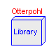
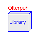

This library provides a collection of ASM3 secondary clarifier models based on
several theories.
The library currently is structured in following sub-libraries:
Takacs |
- secondary clarifier model by Takacs et al [1] |
Haertel |
- secondary clarifier model by Haertel [2] |
Otterpohl |
- secondary clarifier model by Otterpohl [3] |
Krebs |
- secondary clarifier model by Krebs [4] |
Simple |
- very basic secondary clarifier model
|
Main Author: Gerald Reichl Technische Universitaet Ilmenau Faculty of Informatics and Automation Department Dynamics and Simulation of ecological Systems P.O. Box 10 05 65 98684 Ilmenau Germany email: gerald.reichl@tu-ilmenau.de
References: [1] I. Takacs and G.G. Patry and D. Nolasco: A dynamic model of the clarification-thickening process. Water Research. 25 (1991) 10, pp 1263-1271. [2] L. Haertel: Modellansaetze zur dynamischen Simulation des Belebtschlammverfahrens. TH Darmstadt, Dissertation, 1990. [3] R. Otterpohl and M. Freund: Dynamic models for clarifiers of activated sludge plants with dry and wet weather flows. Water Science and Technology. 26 (1992), pp 1391-1400. [4] P. Krebs and M. Armbruster and W. Rodi: Numerische Nachklaerbeckenmodelle. Korrespondenz Abwasser. 47 (7) 2000. pp 985-999.
Copyright (C) 2002 - 2003, Gerald Reichl
The Modelica package is free software; it can be redistributed and/or modified under the terms of the Modelica license, see the license conditions and the accompanying disclaimer in the documentation of package Modelica in file "Modelica/package.mo".